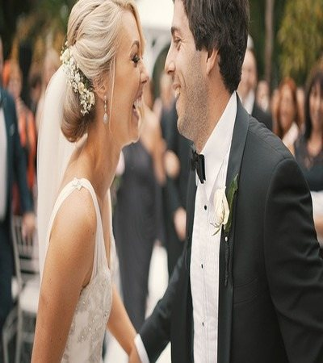

Free Amenities
- Breakfast
- Exercise/Workout Room
- Indoor Pool
- WiFi High-Speed Internet Access
- Smart TVs in Each of the Rooms
- Parking
- Temple shuttle
- Family history consultation and family ordinance card service
Specialized Services
At Temple Inn & Suites, we strive to provide a wide range of services. Our aim is to make regular temple attendance an attainable goal for families and individuals. Our special services are available to all temple patrons.
- Free access to changing rooms and bathroom facilities
- (for temple patrons who have traveled far and need to change to and from church clothes)
- A playroom and low-cost, short-term babysitting services for the children of patrons
- Temple history themed reception and sitting area
- A family search center that supports family search and ordinance work
Special Services
For full-time temple missionaries
- Long-term stay accommodations in kitchenette suites

For Weddings
- Wedding Reception Accommodations
- Reception Hall & Kitchen Access
- Catering Options